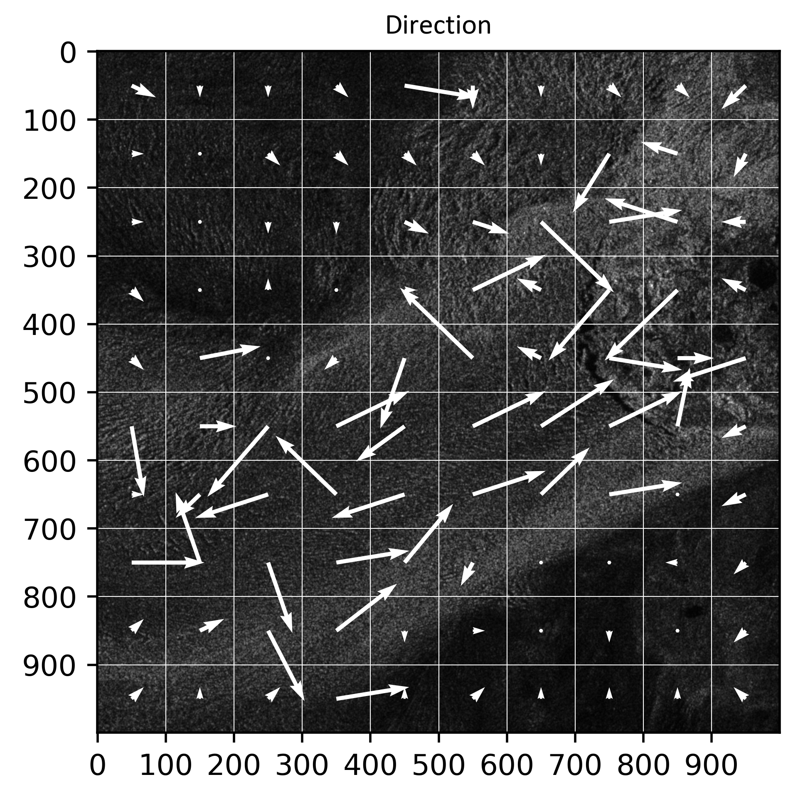

PRELUDIUM 21
Table of contents
Novel view on the study of glacier kinematics in the context of global climate change
Goal and siginifcance
The project aims to develop a new method for monitoring glacier movements using SAR data and machine learning. By combining the Offset-Tracking (OT) and DInSAR technique, with high-resolution SAR images, it will analyze changes in glacier kinematics, detect anomalies, and assess speed trends in Greenland and Svalbard. The research involves testing machine learning algorithms to optimize displacement assessment, followed by comparative analyses using GIS software. Ultimately, the goal is to provide a more accurate and efficient way of monitoring glacier behavior and environmental changes.
Tasks
Task 1. Collecting satellite radar images for selected research areas
The research will be conducted on groups of glaciers in two main regions: Greenland and Svalbard. In Greenland, attention will be paid to the west coast, especially to the following glaciers: Jakobshavn (the highest velocities in Greenland), Sermaq (occurrence of collapse basins) and Petterman (hydrological issues with rivers which destabilize the glacier). The Nathorstbreen, Kronebreen and Hansbreen glaciers will be especially investigated in the Svalbard region which is characterized by slower velocities compared to Greenland. Radar images from the Sentinel-1 satellite mission will be collected as they are available free of charge and at regular intervals. Moreover, depending on the availability of data, it is planned to use high-resolution datasets from well-known (Cosmo-SkyMed, TerraSAR-X) or newly developed SAR missions (ICEYE, RCM, Capella Space or NISAR), which may be useful in areas of slower movements or smaller spatial extent.
Task 2. Processing of SAR data using classical methods
In the second step, collected SAR datasets will be processed with such methods as DInSAR and OT to obtain information about the displacement field in selected regions. Additional, calculations will be improved by using the offset field to improve DInSAR analysis to detect local deformation. This approach finds applications in earthquake areas, nevertheless, it is not commonly used in glacier monitoring. As a result, information about horizontal and LOS displacements will be obtained for each research area.
M1 – the first milestone: characteristic of the displacement field based on SAR dataset
Task 3. Development of a novel algorithm based on Machine Learning tools
Preprocessed SAR data containing phase information, coherence, the amplitude of a signal and the backscatter coefficient will be used as an input to test various ML models and as an effect to create an optimal algorithm for detecting full displacement field. Different ML models and their parameters will be tested to obtain the best quality of the results. Each model will be assessed by the statistics calculated after each epoch.
Task 4. Gathering of reference data and analysis
Information about glaciers from independent databases will be collected and analysed. In the Greenland area following databases will be investigated: MEaSUREs, CPOM Near Real-Time, and Promice. In the case of Svalbard, three datasets will be investigated: from the University of Oslo, the Norwegian Copernicus Glacier service, and the Polish Polar DataBase from Hornsund polar station. These databases contain different information such as velocity, terminus position, mass balance or in-situ measurement from ablation sticks or meteorological stations. Part of these datasets will be used in analysing glaciers dynamics, but part of the data containing information about velocities or displacement will be used to check the correctness of the newly developed method.
Task 5. Validation of the novel algorithm
In this stage, the results obtained using a standard approach and a new method will be compared to movement values from independent databases. In case of a lack of data, results from classic calculations will be used as a reference. As a result, the best algorithm will be selected and prepared to use for further research including long-term analysis of displacements.
M2 – the second milestone: built and validated algorithm
Task 6. Analysis of glaciers dynamics
The tools created in Task 5 will allow a long-term analysis of glacier dynamics. The full displacement field will be analyzed over long timespans to determine how the selected glaciers are changing over time. Special attention will be paid to finding areas and dates where collapse basins occurred. It will be also analyzed when the speed-up period appears and if there is any relation between horizontal and LOS displacements in time. It will also allow continuous monitoring of glaciers and detection of possible anomalies in trends of their dynamics.
M3 - the third milestone: investigation of the physics of the phenomena
Progress & Intermediate Results
Conference proceedings:
“Training Dataset for the Machine Learning Approach in Glacier Monitoring Applying SAR Data” - Ł. Piwowar, M. Łucka, W. Witkowski
Find out more: article
Sample of current results presenting velocity field for part of Jakobshavn Glacier (Greenland) delivered by developed CNN:
